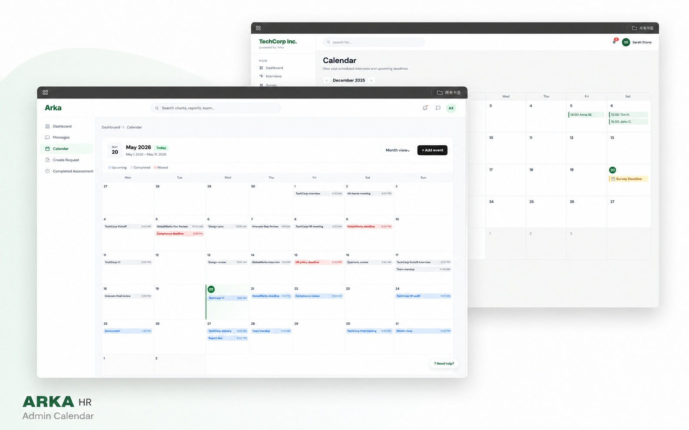
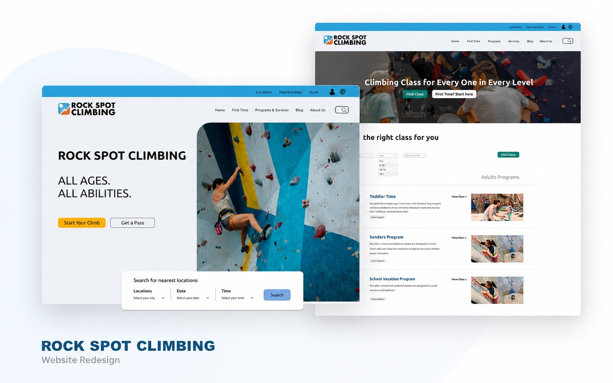
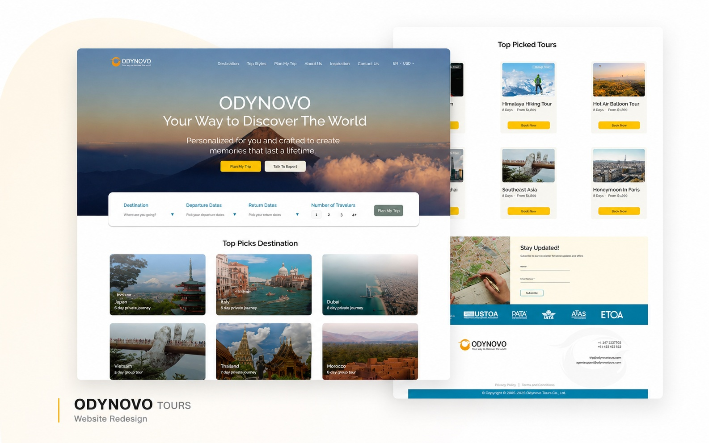

Client-Sponsored Capstone · UX/UI · Front-End
ARKA HR
Designed a workflow-centered scheduling module for an HR management platform and translated selected Figma screens into responsive HTML.
View case study →Selected work
A selection of research-driven website and product experiences, spanning workflow redesign, information architecture, responsive interfaces, and prototyping.

Client-Sponsored Capstone · UX/UI · Front-End
Designed a workflow-centered scheduling module for an HR management platform and translated selected Figma screens into responsive HTML.
View case study →
Academic Website Redesign · UX/UI
Rebuilt the website structure around first-time climbers, program discovery, and a clearer path from interest to class availability.
View case study →
Academic Website Redesign · UX Research
Used brand and audience research to redesign a dense travel website into a clearer, more guided trip-planning experience.
View case study →